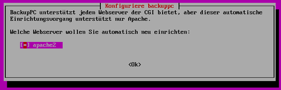
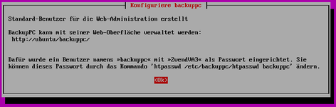
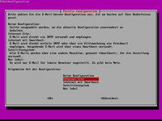

BackupPC
Dieser Artikel wurde für die folgenden Ubuntu-Versionen getestet:
Ubuntu 16.04 Xenial Xerus
Ubuntu 14.04 Trusty Tahr
Artikel für fortgeschrittene Anwender
Dieser Artikel erfordert mehr Erfahrung im Umgang mit Linux und ist daher nur für fortgeschrittene Benutzer gedacht.
Zum Verständnis dieses Artikels sind folgende Seiten hilfreich:
BackupPC  ist eine unter der GPL lizenzierte Open-Source-Backup-Lösung für Server, um Client-Rechner im lokalen Netzwerk automatisch zu sichern. Es bietet ein Webfrontend (http/cgi) zur Konfiguration und zur Übersicht. Auf den Client-Rechnern werden verschiedene Betriebssysteme unterstützt: Clients mit Windows werden über SMB gesichert, Clients mit Linux bevorzugt über rsync. Die Client-Rechner benötigen dabei keine feste IP-Adresse, sondern können auch über DHCP erreichbar sein. BackupPC basiert auf Perl.
ist eine unter der GPL lizenzierte Open-Source-Backup-Lösung für Server, um Client-Rechner im lokalen Netzwerk automatisch zu sichern. Es bietet ein Webfrontend (http/cgi) zur Konfiguration und zur Übersicht. Auf den Client-Rechnern werden verschiedene Betriebssysteme unterstützt: Clients mit Windows werden über SMB gesichert, Clients mit Linux bevorzugt über rsync. Die Client-Rechner benötigen dabei keine feste IP-Adresse, sondern können auch über DHCP erreichbar sein. BackupPC basiert auf Perl.
BackupPC arbeitet dateibasiert, so dass identische Dateien physikalisch nur einmal vorkommen. Dadurch wird sowohl Platz als auch Bandbreite gespart. Die Speicherung der Backup-Dateien erfolgt im Ordner /var/lib/backuppc. Dieser muss ausreichend groß sein, um alle zu sichernden Daten aufnehmen zu können. Es wird empfohlen, diese Partition mittels LVM zu verwalten. Symlinks sind ausschließlich für das Hauptverzeichnis erlaubt. In den Unterverzeichnissen darf kein mount --bind oder verlinkter Ordner sein!
Als Minimum-Speicherbedarf kann man die Summe aller zu sichernden Daten zugrunde legen. Dies reicht für wenige Voll- und einige Teilbackups, hängt aber auch von den zu sichernden Daten ab.
Installation¶
BackupPC kann direkt aus den offiziellen Paketquellen installiert werden [1]:
backuppc (universe)
 mit apturl
mit apturl
Paketliste zum Kopieren:
sudo apt-get install backuppc
sudo aptitude install backuppc
BackupPC erfordert die Installation des Webservers Apache, der - sollte er noch nicht vorhanden sein - als Abhängigkeit mitinstalliert wird. Außerdem müssen für Clienten passwortfreie Public Keys erstellt werden [2].
Im Verlauf der Installation werden - je nach Vorkonfiguration - einige Dinge abgefragt, wie Arbeitsgruppenname, Domain-Name und die automatische Änderung der smb.conf, um windows-seitige DHCP-Einstellungen zu nutzen, welche man verneinen sollte. Hier wird nur die beispielhafte Installation mit dem Webserver Apache dargestellt. Während der Installation wird ein Standardbenutzer zur Administration angelegt, dessen Passwort man sich gut merken sollte. Das Passwort kann bei Bedarf im Nachhinein geändert werden.
|  |
| Installation Apache |
|  |
| Passwortanzeige |
|  |
| Angabe des Mail-Servers |
Nach der Installation steht die Verwaltung über das Webfrontend bereits zur Verfügung.
Post-Installation¶
Weitere Benutzer anlegen¶
BackupPC kann für einzelne Benutzer freigeschaltet werden. Das Anlegen des Benutzers kann man am einfachsten im Server-Terminal[3][4] mit dem Befehl erreichen:
sudo htpasswd /etc/backuppc/htpasswd BENUTZERNAME
Der Benutzer hat anschließend Zugriff auf alle Hosts, die dem Benutzernamen entsprechen.
Passwörter ändern¶
Um das Passwort des Benutzers backuppc für den Weblogin zu ändern, gibt man folgenden Befehl im Terminal ein:
sudo htpasswd /etc/backuppc/htpasswd backuppc
Analog kann man so die Passwörter weiterer angelegter Benutzer ändern.
Konfiguration¶
BackupPC erstellt eine Hauptkonfiguration unter /etc/backuppc/config.pl und für jeden Klienten eine Konfiguration unter /etc/backuppc/CLIENT.pl. Diese können über das Webfrontend bearbeitet werden.
Clients ohne Root-Zugang¶
Standardmäßig erfordert BackupPC Root-Rechte auf den Clients, um alle Daten sichern zu können. Bei Ubuntu und dessen offiziellen Derivaten ist das Root-Konto jedoch deaktiviert. Bei ausschließlicher Sicherung von Benutzer-Dateien kann man das Einrichten des Root-Kontos verzichten. Dazu muss der Backup-Server über einen Public Key mit Zugriff auf den Benutzer des Clients verfügen[2].
In der Clientkonfiguration /etc/backuppc/CLIENT.pl muss der Benutzer root durch den Benutzer des Clientrechners ersetzt werden.
$Conf{RsyncClientCmd} = '$sshPath -q -x -l BENUTZER $host $rsyncPath $argList+';
$Conf{RsyncClientRestoreCmd} = '$sshPath -q -x -l BENUTZER $host $rsyncPath $argList+';Dies kann ebenfalls im Webfrontend unter "Edit Config -> Xfer -> RsyncClientCmd", bzw. "RsyncClientRestoreCmd" abgeändert werden.
root-Konto aktivieren¶
Achtung!
root ist ein Systemaccount mit vollem Zugriff auf das gesamte System und damit auch auf alle Dateien und Einstellungen aller Benutzer.
Für die Sicherung mit erweiterten Rechten, muss ein Passwort für den Benutzer root des Clients gesetzt werden.
Apache-Einstellungen¶
BackupPC verfügt über die Datei /etc/backuppc/apache.conf in der man den Alias oder weitere Einstellungen manuell anpassen kann. Die Standardkonfiguration sieht wie folgt aus:
Alias /backuppc /usr/share/backuppc/cgi-bin/
<Directory /usr/share/backuppc/cgi-bin/>
AllowOverride None
Allow from all
# Uncomment the line below to ensure that nobody can sniff importanti
# info from network traffic during editing of the BackupPC config or
# when browsing/restoring backups.
# Requires that you have your webserver set up for SSL (https) access.
#SSLRequireSSL
Options ExecCGI FollowSymlinks
AddHandler cgi-script .cgi
DirectoryIndex index.cgi
AuthUserFile /etc/backuppc/htpasswd
AuthType basic
AuthName "BackupPC admin"
require valid-user
</Directory>Weiterführende Informationen findet man unter Apache-Konfiguration.
Bedienung¶
BackupPC wird über eine Weboberfläche bedient, die sich standardmäßig mit http://SERVER-NAME_ODER_IP/backuppc aufrufen lässt. Eine ausführliche Anleitung des Webfrontends findet sich unter BackupPC/Bedienung.
Kurzübersicht Public Key¶
Installation des Pakets openssh-server auf dem Client
Auf dem Server:
Wechseln auf den Benutzer
backuppcmitsu backuppc
und Eingabe des oben vergebenen Passworts
Erstellen eines Public Key mit
ssh-keygen -t rsa -b 4096
mit leerem Passwort
Die erstellte ID mit Hilfe von
ssh-copy-id -i /var/lib/backuppc/.ssh/id_rsa.pub BENUTZER@CLIENT
auf den Klienten kopieren
Testen, ob der Befehl
ssh BENUTZER@KLIENTerfolgreich funktioniertVerlassen der Shell mit dem Befehl
exit
Auf dem Client:
In der /etc/ssh/sshd_config auf Authentifizierung nur PublicKey umstellen.
Falls der Benutzer
rootgenutzt werden soll, muss der Zugang erlaubt werden.
Problemlösungen¶
Keine Benutzeranmeldung im Webinterface¶
Falls die Anmeldung nicht möglich ist, kann BackupPC mit folgendem Befehl neu konfiguriert werden:
sudo dpkg-reconfigure backuppc
bin-Datei wird zum Download angeboten¶
Dies deutet auf Fehlkonfiguration von Apache hin. BackupPC benötigt aktivierte CGI-Scripte.
sudo a2enmod cgi #enable mod cgi/cgid
Falls das keine Abhilfe schafft, kann man alternativ folgenden Befehl versuchen:
sudo a2disconf serve-cgi-bin
Dabei nicht vergessen, bei jeder Prüfung den Cache des Browsers zu löschen oder gleich in einem neuen Inkognito-Fenster zu arbeiten, sowie den Webserver Apache neu zu starten.
- Erstellt mit Inyoka
-
 2004 – 2017 ubuntuusers.de • Einige Rechte vorbehalten
2004 – 2017 ubuntuusers.de • Einige Rechte vorbehalten
Lizenz • Kontakt • Datenschutz • Impressum • Serverstatus -
Serverhousing gespendet von